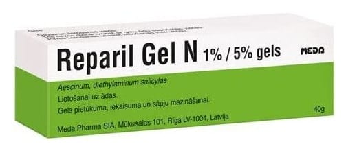

Reparil-Gel N %1 + %5 Jel, 50 g

Ne için kullanılır
KT · Bölüm 1REPARİL-GEL N cilt üzerine uygulamaya yönelik bir jeldir. Şişliği giderici (antiödematöz), iltihap giderici (anti-enflamatuvar) ve ağrı kesici (analjezik) özelliktedir. 100 gramında etkin madde olarak 1 g essin ve 5 g dietilamin salisilat içerir. Bir kutu REPARİL-GEL N, 50 gram olarak ambalajlanmıştır. REPARİL-GEL N travma sonucu oluşan ezik, çürük, burkulma (distorsiyon), kan toplanması (hematom) ve kiriş kılıfı iltihabında (tendovaginit) durumlarında, omurga kemiğinin ağrılı durumlarında (servikal sendrom, sırt ağrısı, bel ağrısı [lumbago], siyatik), yüzeysel toplardamar iltihabı (tromboflebit) ve varisleşmiş damarlarda kullanılır.